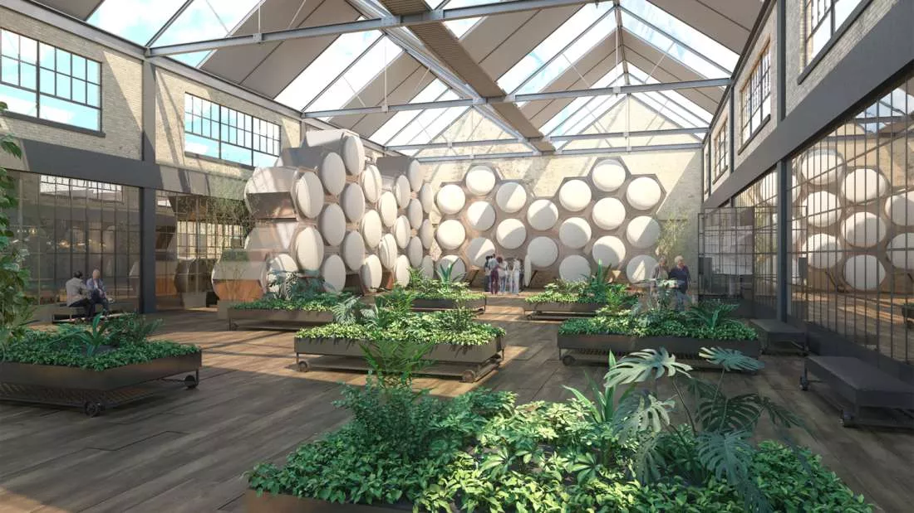

A compostagem humana, também conhecida como Redução Orgânica Natural
(NOR), é um método no qual restos não embalsamados (processo de
conservação de corpos para impedir sua decomposição) são processados e
transformados em nutrientes para o solo.

Como Funciona a Compostagem Humana?
Preparação do Corpo
Após a morte, o corpo é colocado em um recipiente especial, como um
caixão de compostagem.
O recipiente é preenchido com materiais orgânicos, como serragem,
palha ou folhas secas.
Decomposição Natural
Microrganismos, como bactérias e fungos, começam a decompor o corpo.
O ambiente é controlado para manter condições aeróbias e
termofílicas, acelerando a decomposição.
Transformação em Húmus
Ao longo de algumas semanas ou meses, o corpo se decompõe
completamente.
O resultado é um material semelhante ao húmus, rico em nutrientes.
Benefícios da Compostagem Humana
Sustentabilidade Ambiental
Reduz a necessidade de espaço em cemitérios e a poluição associada à
cremação.
Evita a contaminação do solo por produtos químicos usados em
caixões.
Retorno à Natureza
O húmus produzido pode ser usado para fertilizar árvores, flores e
plantas.
É uma maneira de retornar os nutrientes do corpo à terra.
Custos Mais Baixos
A compostagem humana é geralmente mais acessível do que funerais
tradicionais.